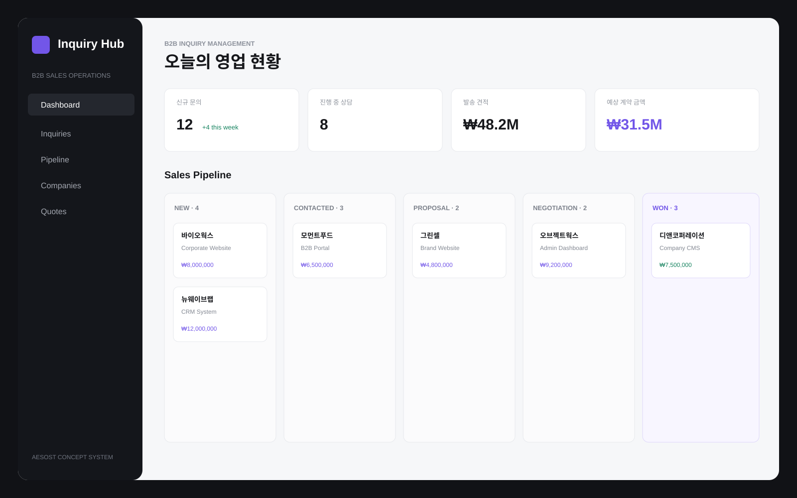

문의가 흩어질 때
회사명, 담당자, 서비스, 예산, 유입경로를 한 곳에 모읍니다.
B2B INQUIRY HUB / SYSTEM SOLUTION 02
B2B Inquiry Hub는 회사 홈페이지로 들어오는 기업 문의를 이메일에 쌓아두지 않고, 신규 문의부터 상담·견적·협의·계약까지 하나의 영업 흐름으로 관리하도록 설계한 시스템입니다.

WHY THIS SYSTEM
기업 문의를 이메일과 메신저로만 관리하면 누가 답변했는지, 견적은 발송했는지, 다음 연락은 언제인지 놓치기 쉽습니다. B2B Inquiry Hub는 문의 한 건을 하나의 영업 기회로 보고 단계별로 추적합니다.
회사명, 담당자, 서비스, 예산, 유입경로를 한 곳에 모읍니다.
신규 → 상담 → 견적 → 협의 → 계약 단계로 현재 위치를 확인합니다.
후속 연락일과 견적 상태를 함께 기록해 다음 행동을 명확하게 만듭니다.
SCREEN GUIDE
화면 탭을 누르면 실제 데모의 해당 화면으로 미리보기가 바뀝니다. 구조를 먼저 이해한 뒤 마지막에 전체 데모에서 문의 등록과 상태 변경을 직접 체험할 수 있습니다.
신규 문의, 진행 중 상담, 견적 금액과 예상 계약 금액을 한 화면에서 확인합니다.
WORKFLOW
문의 접수 이후 담당자가 반복해서 해야 하는 행동을 단계별로 연결해 보여주는 데모입니다.
기업명, 담당자, 요청 서비스, 예산과 후속 연락일을 등록합니다.
문의 내용을 확인하고 상담 단계로 이동해 영업 기회를 관리합니다.
제안 금액과 발송 상태를 기록하고 협의 단계로 이어갑니다.
협의가 끝난 문의를 계약으로 전환해 영업 성과를 확인합니다.
FULL INTERACTIVE DEMO
새 문의 등록, 기업 검색, Pipeline 단계 이동, 기업 DB, 견적 현황을 직접 사용할 수 있습니다. 입력 데이터는 브라우저에만 임시 저장됩니다.
CUSTOM SYSTEM
홈페이지 문의폼, 담당자 배정, 견적서, 알림, 계약 DB까지 실제 영업 방식에 맞춰 확장할 수 있습니다.